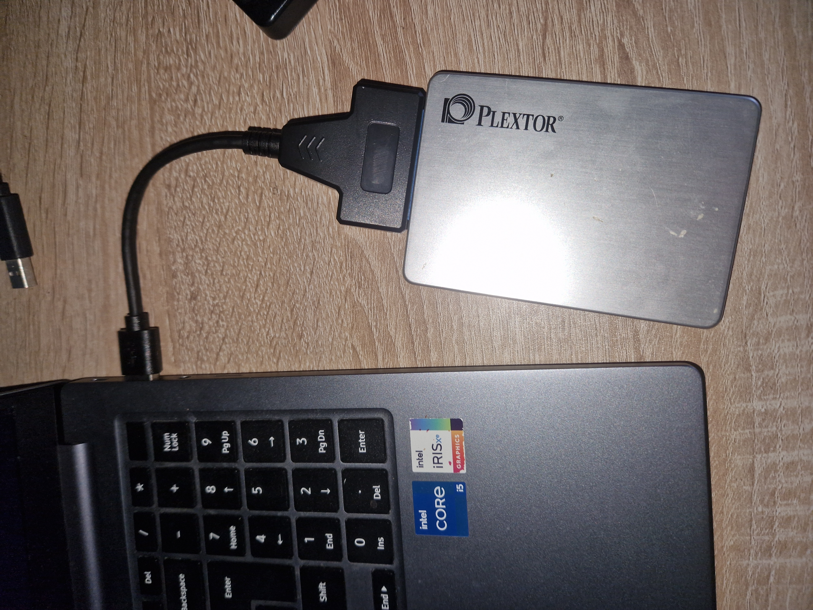
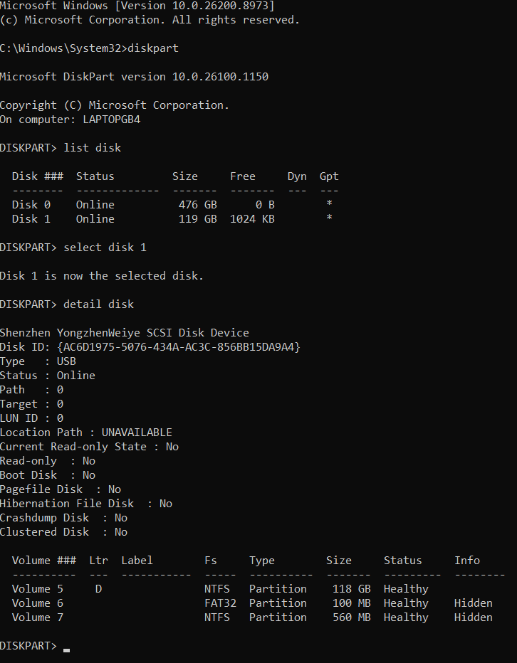
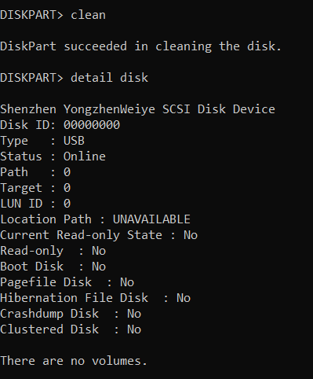
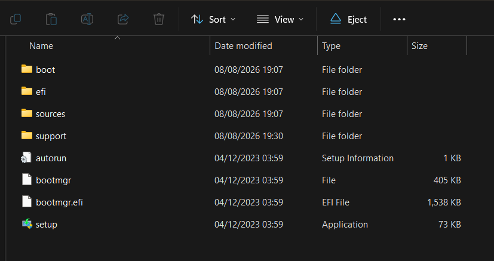
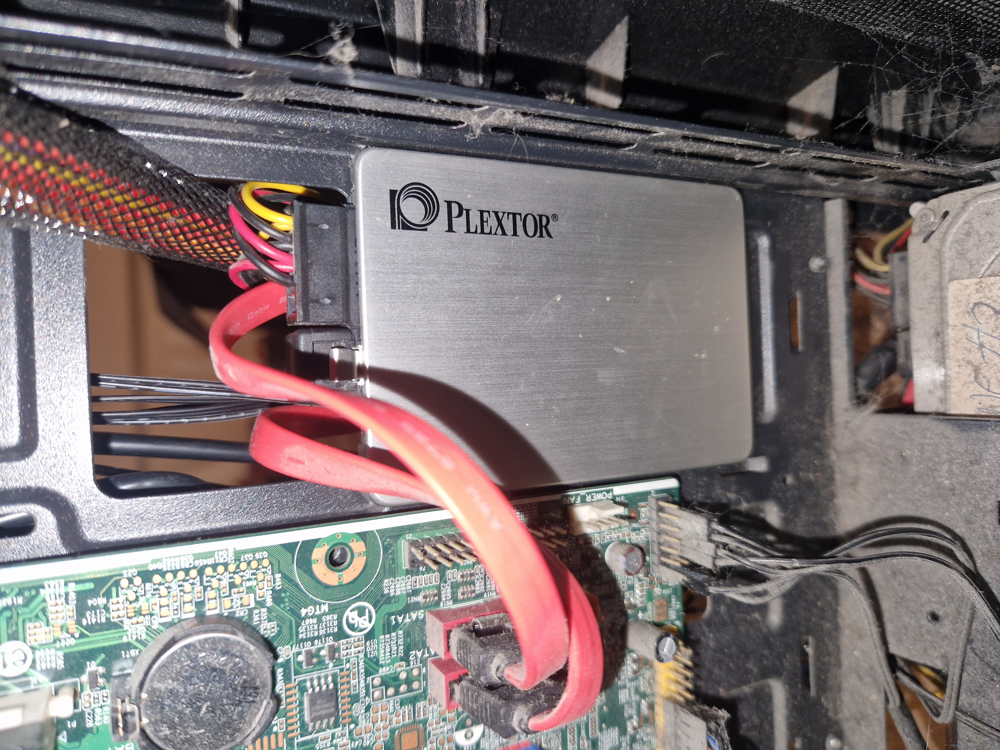

Incident Report: Root C: Drive Permission Corruption & Recovery
A breakdown on what i did to try fix this tower desktop. Doing hardware extraction, USB-to-SATA adapter and command-line-level formatting.
Target Isolation, Hardware Translation & Local ISO Extraction
Incident Summary & Diagnostic Logic: Problem Summary & Diagnostic Logic: Altering the root directory permissions on the desktop's C: drive caused a hard access lockdown, rendering the operating system completely unbootable. Standard diagnostic recovery via external FAT32 USB boot media was initially attempted; however, the legacy American Megatrends (AMI) motherboard firmware completely failed to initialise or recognise the external USB sub-system at startup, bypassing the drive entirely during the POST cycle. To bypass this hardware limitation and preserve user data integrity, the primary storage medium—a 128GB Plextor PX-128S3C SSD—was physically removed from the desktop tower. Using a USB-to-SATA adapter cable as an interface, I connected the drive to a laptop. Because I had a foundational understanding but did not know the advanced file deployment commands by heart, I used AI as a guide to research the exact steps. Under this guided documentation, I used a file extraction tool to unpack the official Windows 10 installation .iso file layout directly on the laptop host to prepare for a manual, local file setup.
To overcome this hardware controller limitation and preserve user data integrity, I executed an advanced local block deployment workaround. The primary storage medium—a 128GB Plextor PX-128S3C SSD—was physically extracted from the desktop chassis. Using a USB-to-SATA adapter cable as a translation interface, I bridged the drive to a secondary technician laptop. Once connected, I utilized a file extraction tool to unpack the official Windows 10 installation .iso image architecture directly on the laptop host, manually copying the uncompressed setup directory tracks and the critical deployment payload (install.esd) straight onto a local volume partition on the Plextor SSD itself. This strategy aimed to convert the SSD into its own self-contained bootable installation media to bypass the faulty desktop USB ports entirely.

Showing where the Plextor PX-128S3C SSD was removed in the desktop chassis. (Click to expand)

Connecting the storage drive to a laptop workstation using the USB-to-SATA cable link. (Click to expand)
Command-Line Diagnostics & Partition Wipe
Resolution Action: I launched the Windows command prompt on the laptop with administrative privileges and opened the native partitioning utility, diskpart. Because I do not know advanced command-line code by heart, I used AI as a guide to research the exact commands needed to safely handle the drive. Following the guided instructions, I ran list disk and detail disk to identify the 119GB Plextor volume, making sure I did not accidentally select the laptop's internal hard drive. Once verified, I ran the clean command, which successfully wiped away the old partition tables, dropped the corrupted file permissions, and reset the SSD back to clean, unallocated space.

Using list disk and detail disk commands to safely identify the 119GB Plextor SSD capacity. (Click to expand)

The confirmation screen showing the clean command successfully resetting the drive structure to empty space. (Click to expand)
Hardware Reassembly & Project Conclusion
Final Action & Outcome: After copying the extracted Windows installation files over, I opened File Explorer on the laptop to verify that all directories were unpacked correctly and readable. With the file checks complete, I disconnected the Plextor SSD from the adapter cable and physically mounted it back into the desktop tower chassis, securely attaching the internal SATA data and power routing lines directly to the motherboard.
Although the desktop motherboard didn't want to boot the setup files directly from the SSD, doing this project was a really good way for me
to practice. It gave me basic, hands-on experience with taking a computer apart, plugging in storage drives, and using command-line tools
like diskpart. I am now much more confident opening up computer cases and checking hardware cables when things go wronges.

Verifying the file layout structures of the extracted installation directory assets. (Click to expand)

Remounting the storage component and re-attaching internal motherboard system routing lines. (Click to expand)